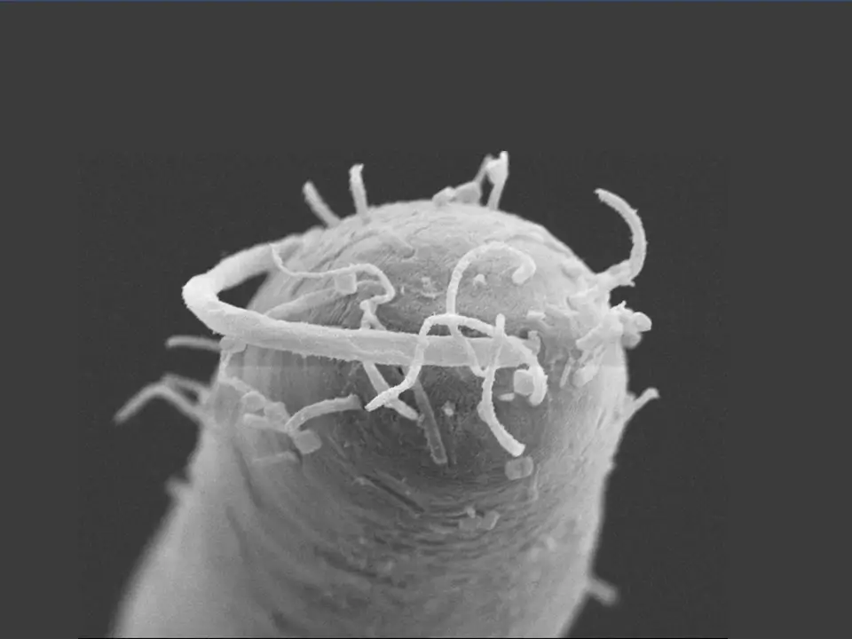

Laxus oneistus
The nematode host
Laxus oneistus is a fascinating free-living marine nematode from the family Stilbonematinae, that thrives in marine shallow-waters.
It stands out for its close and exclusive relationship with Candidatus Thiosymbion oneisti, a sulfur-oxidizing bacterium that coats its surface.
This ectosymbiosis ("external") allows the nematode to survive in sulfidic, low-oxygen or even anoxic environments, showcasing how tiny organisms can form powerful, life-sustaining alliances in nature!

Scanning electron microscopy image of a L.
oneistus head.
How is Laxus interacting with Thiosymbion?
- The below figure illustrates possible nutritional links between the partners in oxygen-rich upper layers and anoxic, sulfur-rich deeper layers of marine sediment (Paredes et al., 2022). We highlight key findings:
- - The worm might be providing phospholipds to the bacteria, specially in deeper sand.
- - Here, also symbiont attachement mediated by lectins might be reinforced
- - There might be worm-to-symbiont hydrocarbon exchange.
- - Exposing the bacteria to oxygen gives it an ecological boost, as oxygen provides the most energy, which helps the bacteria divide and grow!